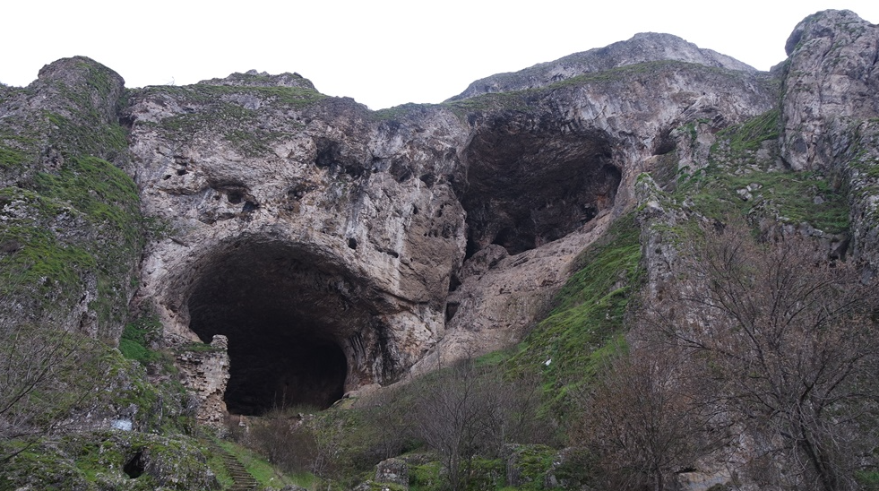
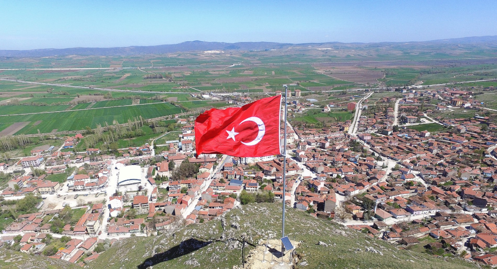

İNÖNÜ
İnönü, Eskişehir'in bir ilçesi. İstanbul-Eskişehir demiryolu ve Bozüyük-Kütahya kara yolu üzerindedir.
Ford Otosan kamyon fabrikası bu ilçede bulunur.
TARİHÇESİ
Kasabanın kuzeyinde, şimdiki adı Eserönü olan mevkideki kalıntılardan toplanan
sütun başlıklarının incelenmesinden varılan sonuca göre, kasabanın kurucuları Frigler'dir.
Romalıların Anadolu'ya yerleşmesinden sonra MS 395'te Bizans İmparatorluğu toprakları arasına katılmıştır.
Hâlen İnönü kalesi denilen Bizans yapısı inlerden ve Kandilli köyünden çıkan tarihi eserlerden anlaşılmıştır.
Bizanslar zamanında kasabanın şimdiki yerine yani kayaların önüne çekildiği anlaşılmaktadır.
Kasabanın Bizanslılar zamanında adının Basilika olduğu anlaşılmıştır.
Osmanlı döneminde önce Anadolu eyaletine, sonra Hüdavendigar vilayetine
bağlı; merkezi Bilecik olan Ertuğrul sancağına bağlı Söğüt kazasına bağlı bir köy olan İnönü,
Kurtuluş Savaşı'nda I. ve II. İnönü Muhabereleri'nin geçtiği yerdir.
1920 yılında Yunan işgaline uğrayan ve 4 Eylül 1922'de işgalden kurtulan İnönü köyü,
1923'te il yapılan Bilecik'in Söğüt ilçesine bağlı köy oldu.
1926 yılında Söğüt'ten ayrılan Bozüyük ilçesine bağlı bucak merkezi olan İnönü,
1963'te Eskişehir'in merkez ilçesine bağlandı. İnönü, 1987 yılında ilçe oldu.


Mahmudiye İlçesi Hakkında Bilgi Almak İçin Tıklayınız.